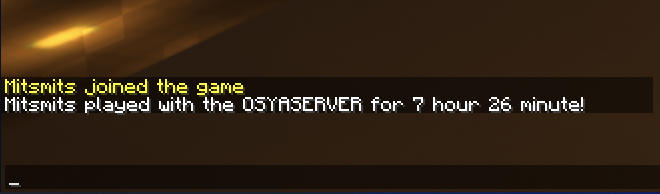

プレイヤーランクについて
おしゃサーバーでは、初回ログインからの累積プレイ時間に応じてランクアップし権限を付与するランクシステムを導入しております。
初期ユーザーによるスパムを防止し、既存のプレイヤー様は時間経過により使えるコマンドが増えるなどの特典を得られます。
サーバーにログインすると、これまでの累積プレイ時間がチャット欄に表示されます。
これは、クライアント側で保存されている「統計」データとは別の物であり、サーバー側で独自に計算されています。
AFKを検知するため、放置時間などはカウントされないことがあります。
初期ユーザーによるスパムを防止し、既存のプレイヤー様は時間経過により使えるコマンドが増えるなどの特典を得られます。
プレイ時間の表示

サーバーにログインすると、これまでの累積プレイ時間がチャット欄に表示されます。
これは、クライアント側で保存されている「統計」データとは別の物であり、サーバー側で独自に計算されています。
AFKを検知するため、放置時間などはカウントされないことがあります。
プレイ時間とランク
Default ログイン後30分間はこの権限です。バニラ同様の権限です。
Beginner（初心者） 30分後～3時間の権限です。チェスト保護ができるようになります。
Resident（居住者) 3時間～7日間の権限です。領域保護が可能になります。
Trusted（信頼されたユーザ）7日分以上の時間をプレイすると信頼されたユーザーになります。特典・権限は今後実装予定です。